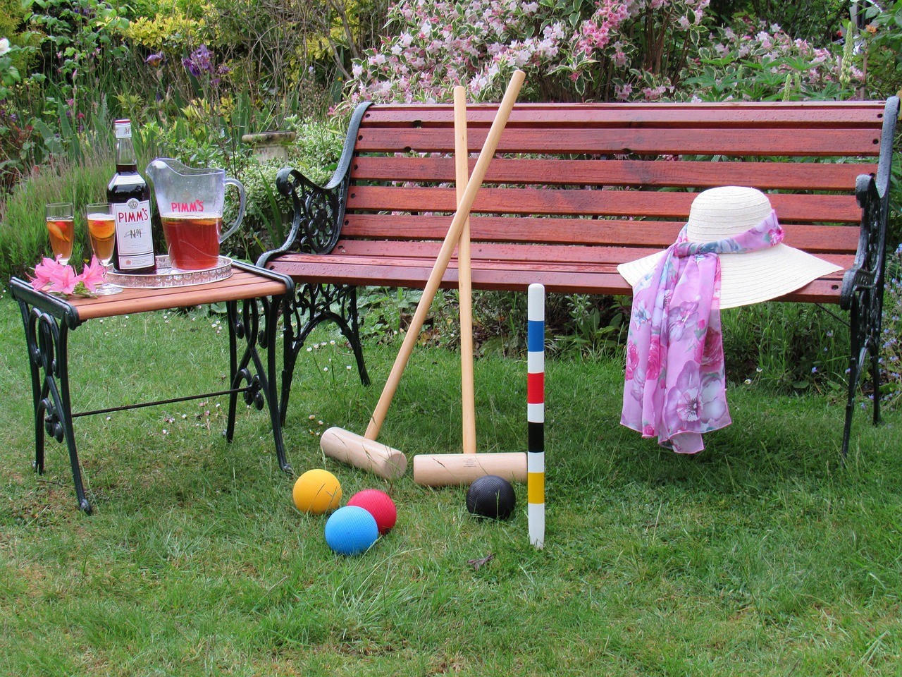

Photos of the lawns, clubhouse and members of Stephens Croquet Club.
Members playing on a sunny lawn, others watching from the verandahThe clubhouse and members playing croquet on the lawn, late afternoon lightA member lining up a shot, ball and hoop in the foregroundThe clubhouse set up for a function, honour boards on the wallsThe clubhouse ready for a hired eventMallets, hoop and balls set up on the lawn (stock photograph)Striped mallets racked in a clubroom (stock photograph)A game of croquet in progress on a grass court (stock photograph)

Mallets and balls beside afternoon refreshments (stock photograph)A vintage boxed croquet set (stock photograph)Gateball, a team relative of croquet, in play (stock photograph)